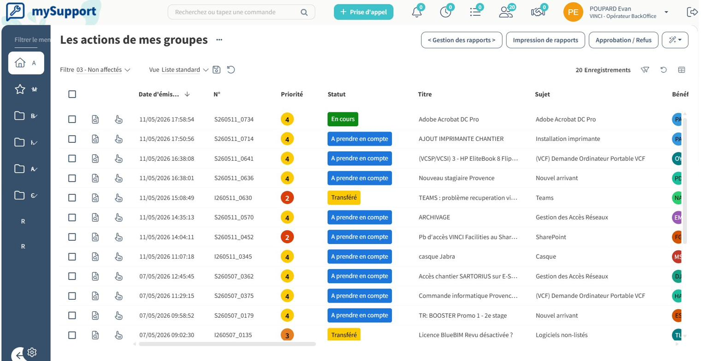

Contexte
L'agence du Mercantour reçoit en continu des demandes d'assistance, organisées par secteurs métier : Bâtiment, Génie Civil, Route, Réseaux… Au sein du service IT, je suis affecté à la prise en charge des tickets des secteurs Bâtiment et Génie Civil.
Les demandes traitées couvrent un large périmètre :
- problèmes de connexion ou d'accès (VPN, partages, applications) ;
- défaillance d'équipement physique (poste, périphérique, écran) ;
- problèmes d'installation ou de mise à jour logicielle ;
- demandes diverses (création d'accès, configuration, paramétrage…).
Déroulé technique
Chaque ticket suit une procédure de traitement standardisée, depuis la prise en charge jusqu'à la clôture documentée.
Étape 1 — Prise en charge du ticket
Dès l'arrivée d'un ticket dans le pool (la file d'attente des tickets non assignés), je me l'attribue. Cette action retire le ticket de la liste commune et garantit qu'il ne sera pas traité en double par un autre technicien.

Étape 2 — Premier contact avec le demandeur
J'envoie un courriel au demandeur du ticket. Selon la nature du problème, deux approches sont possibles :
- Procédure écrite : si la résolution est simple et que l'utilisateur peut la réaliser lui-même (réinitialisation de mot de passe, redémarrage d'un service, etc.) ;
- Appel Teams : pour les cas plus complexes, je propose un rendez-vous afin d'analyser le problème en direct et, si nécessaire, de prendre la main à distance sur le poste pour effectuer le dépannage.
Étape 3 — Réorientation si le ticket ne nous concerne pas
Certains tickets relèvent d'un autre service. Dans ce cas, ma responsabilité
est de les réattribuer au bon groupe : RH,
Finance, Microsoft, Réseaux, etc. Cette
étape évite que le ticket ne stagne et raccourcit le délai de résolution pour
l'utilisateur.
Étape 4 — Diagnostic et résolution
Pour les tickets dont je suis en charge, j'applique une démarche structurée :
- reproduction du problème ou collecte des informations nécessaires ;
- identification de la cause (matériel, logiciel, droits d'accès, réseau…) ;
- application du correctif ou contournement ;
- validation avec l'utilisateur que le service est rétabli.
Étape 5 — Clôture & documentation
Le ticket n'est clôturé qu'après deux actions essentielles :
- rédaction d'un commentaire de résolution décrivant la solution appliquée, qui restera consultable comme historique d'intervention ;
- catégorisation du ticket selon sa nature (problème technique, physique, connexion, mise à jour…) afin d'alimenter la base de connaissances ; cette classification sert de documentation pour traiter plus rapidement les futurs cas similaires.
Conclusion
Le traitement des tickets représente le cœur de mon activité quotidienne au service IT. Cette mission m'a permis de développer ma méthode de diagnostic, ma communication écrite et orale avec les utilisateurs, ainsi que ma capacité à prioriser et catégoriser des demandes hétérogènes. Au-delà de la résolution immédiate, la discipline de documentation systématique contribue à la mémoire collective du service et à l'amélioration continue de la qualité du support rendu.
Compétences validées
Cette situation professionnelle valide les compétences suivantes :
Répondre aux incidents et aux demandes d'assistance et d'évolution
Collecte, suivi, orientation et traitement des demandes des utilisateurs des secteurs Bâtiment et Génie Civil.
Voir la compétence → E4 · 03Mettre à disposition des utilisateurs un service informatique
Accompagnement des utilisateurs à distance et rétablissement du service.
Voir la compétence → E4 · 05Organiser son développement professionnel
Documentation systématique des résolutions et alimentation de la base de connaissances.
Voir la compétence → E5 · 03Exploiter, dépanner et superviser une solution d'infrastructure réseau
Administration à distance, qualification et résolution des incidents, maintien de la qualité de service.
Voir la compétence →